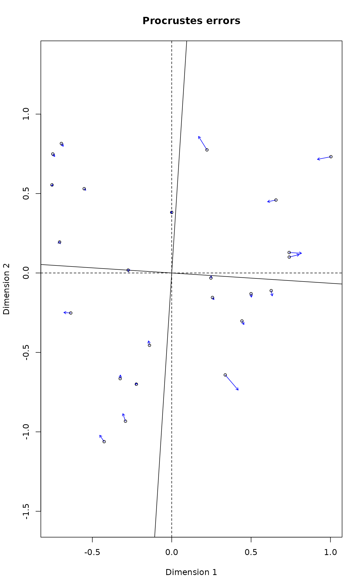

decostand.RdThe function provides some popular (and effective) standardization methods for community ecologists.
decostand(x, method, MARGIN, range.global, logbase = 2, na.rm=FALSE, ...)
wisconsin(x)Community data, a matrix-like object.
Standardization method. See Details for available options.
Margin, if default is not acceptable. 1 = rows,
and 2 = columns of x.
Matrix from which the range is found in
method = "range". This allows using same ranges across
subsets of data. The dimensions of MARGIN must match with
x.
The logarithm base used in method = "log".
Ignore missing values in row or column standardizations.
Other arguments to the function (ignored).
The function offers following standardization methods for community data:
total: divide by margin total (default MARGIN = 1).
max: divide by margin maximum (default MARGIN = 2).
frequency: divide by margin total and multiply by the
number of non-zero items, so that the average of non-zero entries is
one (Oksanen 1983; default MARGIN = 2).
normalize: make margin sum of squares equal to one (default
MARGIN = 1).
range: standardize values into range 0 ... 1 (default
MARGIN = 2). If all values are constant, they will be
transformed to 0.
rank, rrank: rank replaces abundance values by
their increasing ranks leaving zeros unchanged, and rrank is
similar but uses relative ranks with maximum 1 (default
MARGIN = 1). Average ranks are used for tied values.
standardize: scale x to zero mean and unit variance
(default MARGIN = 2).
pa: scale x to presence/absence scale (0/1).
chi.square: divide by row sums and square root of
column sums, and adjust for square root of matrix total
(Legendre & Gallagher 2001). When used with the Euclidean
distance, the distances should be similar to the
Chi-square distance used in correspondence analysis. However, the
results from cmdscale would still differ, since
CA is a weighted ordination method (default MARGIN = 1).
hellinger: square root of method = "total"
(Legendre & Gallagher 2001).
log: logarithmic transformation as suggested by
Anderson et al. (2006): \(\log_b (x) + 1\) for
\(x > 0\), where \(b\) is the base of the logarithm; zeros are
left as zeros. Higher bases give less weight to quantities and more
to presences, and logbase = Inf gives the presence/absence
scaling. Please note this is not \(\log(x+1)\).
Anderson et al. (2006) suggested this for their (strongly) modified
Gower distance (implemented as method = "altGower" in
vegdist), but the standardization can be used
independently of distance indices.
alr: Additive log ratio ("alr") transformation
(Aitchison 1986) reduces data skewness and compositionality
bias. The transformation assumes positive values, pseudocounts
can be added with the argument pseudocount. One of the
samples is a reference, this sample (name or index) can be given
by reference. The first sample is used by default
(reference=1).
Note that this transformation drops one
feature from the transformed output data. The alr
transformation is defined formally as follows: $$alr =
[log\frac{x_1}{x_D}, ..., log\frac{x_{D-1}}{x_D}]$$, where the
denominator sample $$x_D$$ can be chosen arbitrarily. This
transformation is often used with pH and other chemistry
measurenments. It is also commonly used as multinomial logistic
regression.
ilr: Isometric log ratio ("ilr") transformation
(Aitchison 1986) reduces data skewness and compositionality
bias. The transformation assumes positive values, pseudocounts
can be added with the argument pseudocount. Note that this
transformation drops one feature from the transformed output
data. For a formal definition, see e.g. Egozcue et al. (2003). The
calculation may be slow for data sets with many samples or features.
clr: centered log ratio ("clr") transformation proposed by
Aitchison (1986) reduces data skewness and compositionality bias.
This transformation has frequent applications in microbial ecology
(see e.g. Gloor et al., 2017).
$$clr = log_{10}\frac{x_{r}}{g(x_{r})} = log_{10}x_{r} - log_{10}µ_{r}$$ ,
where \(x_{r}\) is a single relative value, \(g(x_{r})\) is
the geometric mean
of relative values per sample, and \(\mu_{r}\) is the arithmetic mean of
relative values per sample. The method can operate only with positive data;
a common way to deal with zeroes is to add pseudocount, either by
adding it manually to the input data, or by using the argument
pseudocount as in
vegan::decostand(x, method="clr", pseudocount=1). Adding
pseudocount will inevitably introduce some bias in the data; see
the rclr method for one available solution.
rclr: robust clr ("rclr") is similar to regular clr
(see above) but allows data that contains zeroes. This method
does not use pseudocounts, unlike the standard clr.
Robust clr divides the values by geometric mean
of the observed features; zero values are kept as zeroes, and not
taken into account. In high dimensional data,
the geometric mean of rclr is a good approximation of the true
geometric mean; see e.g. Martino et al. (2019)
The rclr transformation is defined formally as follows:
$$rclr = log_{10}\frac{x_{r}}{g(x_{r} > 0)}$$
where \(x_{r}\) is a single relative value, and \(g(x_{r} > 0)\) is geometric
mean of sample-wide relative values that are positive (over 0).
Standardization, as contrasted to transformation, means that the entries are transformed relative to other entries.
All methods have a default margin. MARGIN=1 means rows (sites
in a normal data set) and MARGIN=2 means columns (species in a
normal data set).
Command wisconsin is a shortcut to common Wisconsin double
standardization where species (MARGIN=2) are first standardized
by maxima (max) and then sites (MARGIN=1) by
site totals (tot).
Most standardization methods will give nonsense results with
negative data entries that normally should not occur in the community
data. If there are empty sites or species (or constant with
method = "range"), many standardization will change these into
NaN.
Returns the standardized data frame, and adds an attribute
"decostand" giving the name of applied standardization
"method".
Common transformations can be made with standard R functions.
Aitchison, J. The Statistical Analysis of Compositional Data (1986). London, UK: Chapman & Hall.
Anderson, M.J., Ellingsen, K.E. & McArdle, B.H. (2006) Multivariate dispersion as a measure of beta diversity. Ecology Letters 9, 683--693.
Egozcue, J.J., Pawlowsky-Glahn, V., Mateu-Figueras, G., Barcel'o-Vidal, C. (2003) Isometric logratio transformations for compositional data analysis. Mathematical Geology 35, 279--300.
Gloor, G.B., Macklaim, J.M., Pawlowsky-Glahn, V. & Egozcue, J.J. (2017) Microbiome Datasets Are Compositional: And This Is Not Optional. Frontiers in Microbiology 8, 2224.
Legendre, P. & Gallagher, E.D. (2001) Ecologically meaningful transformations for ordination of species data. Oecologia 129, 271--280.
Martino, C., Morton, J.T., Marotz, C.A., Thompson, L.R., Tripathi, A., Knight, R. & Zengler, K. (2019) A novel sparse compositional technique reveals microbial perturbations. mSystems 4, 1.
Oksanen, J. (1983) Ordination of boreal heath-like vegetation with principal component analysis, correspondence analysis and multidimensional scaling. Vegetatio 52, 181--189.
data(varespec)
sptrans <- decostand(varespec, "max")
apply(sptrans, 2, max)
#> Callvulg Empenigr Rhodtome Vaccmyrt Vaccviti Pinusylv Descflex Betupube
#> 1 1 1 1 1 1 1 1
#> Vacculig Diphcomp Dicrsp Dicrfusc Dicrpoly Hylosple Pleuschr Polypili
#> 1 1 1 1 1 1 1 1
#> Polyjuni Polycomm Pohlnuta Ptilcili Barbhatc Cladarbu Cladrang Cladstel
#> 1 1 1 1 1 1 1 1
#> Cladunci Cladcocc Cladcorn Cladgrac Cladfimb Cladcris Cladchlo Cladbotr
#> 1 1 1 1 1 1 1 1
#> Cladamau Cladsp Cetreric Cetrisla Flavniva Nepharct Stersp Peltapht
#> 1 1 1 1 1 1 1 1
#> Icmaeric Cladcerv Claddefo Cladphyl
#> 1 1 1 1
sptrans <- wisconsin(varespec)
# CLR transformation for rows, with pseudocount
varespec.clr <- decostand(varespec, "clr", pseudocount=1)
# ALR transformation for rows, with pseudocount and reference sample
varespec.alr <- decostand(varespec, "alr", pseudocount=1, reference=1)
## Chi-square: PCA similar but not identical to CA.
## Use wcmdscale for weighted analysis and identical results.
sptrans <- decostand(varespec, "chi.square")
plot(procrustes(rda(sptrans), cca(varespec)))
